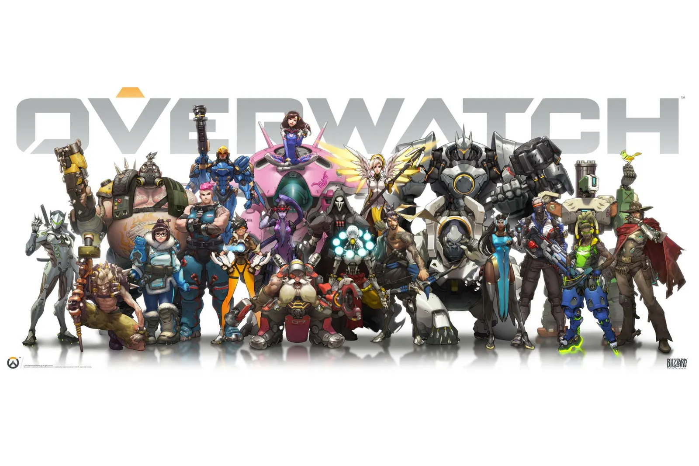
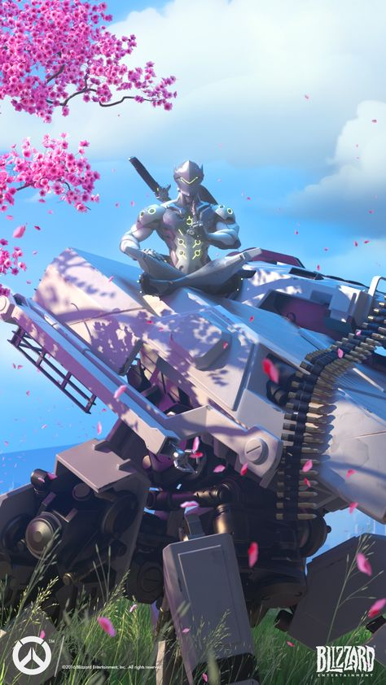
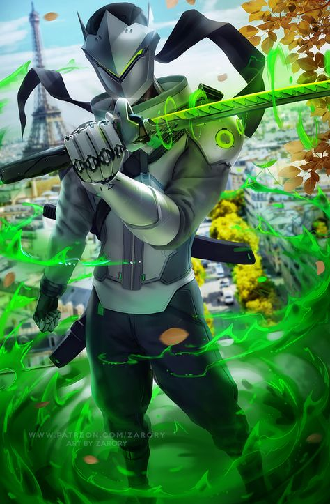

HOME

My name is Vladyslav, I am 17 years old and my hobby is Gaming. I am from Ukraine and now study at NHL Stenden University of Applied Sciences in Emmen, Netherlands. I also enjoy doing sports that is why I excercise every day.
My favourite game is Overwatch
Overwatch 2 is a free-to-play made by Blizzard, team-based action game set in the optimistic future, where every match is the ultimate 5v5 battlefield brawl. Play as a time-jumping freedom fighter, a beat-dropping battlefield DJ, or one of over 30 other unique heroes as you battle it out around the globe.
My favourite hero - Genji
The cyborg ninja Genji Shimada has made peace with the augmented body he once rejected, and in doing so, he has discovered a higher humanity. Near death at the hands of his own brother, ninja Genji Shimada was rescued by Overwatch. To save his life, they made him a living weapon with cybernetic upgrades. Struggling with his nature and purpose after Overwatch’s fall, Genji sought peace through study with the omnic monk Zenyatta before answering Winston’s call.
